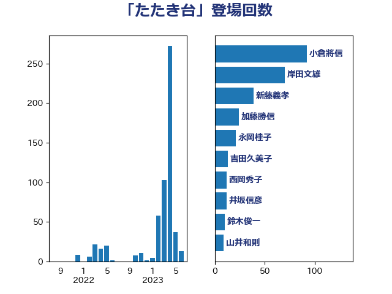

単語「たたき台」

| 小倉將信 | 自由民主党 | 92 回 |
| 岸田文雄 | 自由民主党 | 70 回 |
| 新藤義孝 | 自由民主党 | 39 回 |
| 加藤勝信 | 自由民主党 | 24 回 |
| 永岡桂子 | 自由民主党 | 21 回 |
| 吉田久美子 | 公明党 | 13 回 |
| 西岡秀子 | 国民民主党 | 12 回 |
| 井坂信彦 | 立憲民主党 | 12 回 |
| 鈴木俊一 | 自由民主党 | 10 回 |
| 山井和則 | 立憲民主党 | 9 回 |
| 齋藤健 | 自由民主党 | 8 回 |
| 高木真理 | 立憲民主党 | 8 回 |
| 北側一雄 | 公明党 | 8 回 |
| 鰐淵洋子 | 公明党 | 7 回 |
| 谷合正明 | 公明党 | 7 回 |
| 玉木雄一郎 | 国民民主党 | 7 回 |
| 奥野総一郎 | 立憲民主党 | 7 回 |
| 吉良よし子 | 日本共産党 | 7 回 |
| 中島克仁 | 立憲民主党 | 7 回 |
| 三浦信祐 | 公明党 | 7 回 |
| 田村智子 | 日本共産党 | 5 回 |
| 山下貴司 | 自由民主党 | 5 回 |
| 宮本徹 | 日本共産党 | 5 回 |
| 宮本岳志 | 日本共産党 | 5 回 |
| 上田勇 | 公明党 | 5 回 |
| 高橋千鶴子 | 日本共産党 | 4 回 |
| 高木宏壽 | 自由民主党 | 4 回 |
| 鎌田さゆり | 立憲民主党 | 4 回 |
| 遠藤良太 | 日本維新の会 | 4 回 |
| 足立康史 | 日本維新の会 | 4 回 |
| 礒崎哲史 | 国民民主党 | 4 回 |
| 片山大介 | 日本維新の会 | 4 回 |
| 浜口誠 | 国民民主党 | 4 回 |
| 小林鷹之 | 自由民主党 | 4 回 |
| 野村哲郎 | 自由民主党 | 3 回 |
| 葉梨康弘 | 自由民主党 | 3 回 |
| 自見はなこ | 自由民主党 | 3 回 |
| 櫛渕万里 | れいわ新選組 | 3 回 |
| 山田太郎 | 自由民主党 | 3 回 |
| 小野泰輔 | 日本維新の会 | 3 回 |
| 大西健介 | 立憲民主党 | 3 回 |
| 井上哲士 | 日本共産党 | 3 回 |
| 中川正春 | 立憲民主党 | 3 回 |
| 馬場伸幸 | 日本維新の会 | 2 回 |
| 須藤元気 | 無所属 | 2 回 |
| 越智隆雄 | 自由民主党 | 2 回 |
| 田野瀬太道 | 無所属 | 2 回 |
| 牧義夫 | 立憲民主党 | 2 回 |
| 牧山ひろえ | 立憲民主党 | 2 回 |
| 森屋宏 | 自由民主党 | 2 回 |
| 梅村みずほ | 日本維新の会 | 2 回 |
| 本村伸子 | 日本共産党 | 2 回 |
| 末松信介 | 自由民主党 | 2 回 |
| 日下正喜 | 公明党 | 2 回 |
| 新垣邦男 | 立憲民主党 | 2 回 |
| 後藤茂之 | 自由民主党 | 2 回 |
| 山添拓 | 日本共産党 | 2 回 |
| 堤かなめ | 立憲民主党 | 2 回 |
| 和田義明 | 自由民主党 | 2 回 |
| 和田政宗 | 自由民主党 | 2 回 |
| 吉田統彦 | 立憲民主党 | 2 回 |
| 北神圭朗 | 無所属 | 2 回 |
| 伊波洋一 | 無所属 | 2 回 |
| 井上貴博 | 自由民主党 | 2 回 |
| 高木かおり | 日本維新の会 | 1 回 |
| 音喜多駿 | 日本維新の会 | 1 回 |
| 青山大人 | 立憲民主党 | 1 回 |
| 長友慎治 | 国民民主党 | 1 回 |
| 金子俊平 | 自由民主党 | 1 回 |
| 衛藤晟一 | 自由民主党 | 1 回 |
| 萩生田光一 | 自由民主党 | 1 回 |
| 舞立昇治 | 自由民主党 | 1 回 |
| 緑川貴士 | 立憲民主党 | 1 回 |
| 福田昭夫 | 立憲民主党 | 1 回 |
| 石垣のりこ | 立憲民主党 | 1 回 |
| 矢倉克夫 | 公明党 | 1 回 |
| 田村貴昭 | 日本共産党 | 1 回 |
| 田村まみ | 国民民主党 | 1 回 |
| 牧島かれん | 自由民主党 | 1 回 |
| 泉健太 | 立憲民主党 | 1 回 |
| 森山浩行 | 立憲民主党 | 1 回 |
| 柴山昌彦 | 自由民主党 | 1 回 |
| 松野明美 | 日本維新の会 | 1 回 |
| 松野博一 | 自由民主党 | 1 回 |
| 東徹 | 日本維新の会 | 1 回 |
| 村田享子 | 立憲民主党 | 1 回 |
| 杉尾秀哉 | 立憲民主党 | 1 回 |
| 早稲田ゆき | 立憲民主党 | 1 回 |
| 斉藤鉄夫 | 公明党 | 1 回 |
| 徳永久志 | 無所属 | 1 回 |
| 島村大 | 自由民主党 | 1 回 |
| 岡本あき子 | 立憲民主党 | 1 回 |
| 山際大志郎 | 自由民主党 | 1 回 |
| 山本順三 | 自由民主党 | 1 回 |
| 小森卓郎 | 自由民主党 | 1 回 |
| 小林一大 | 自由民主党 | 1 回 |
| 安江伸夫 | 公明党 | 1 回 |
| 堂込麻紀子 | 無所属 | 1 回 |
| 坂本祐之輔 | 立憲民主党 | 1 回 |
| 吉田宣弘 | 公明党 | 1 回 |
| 加藤鮎子 | 自由民主党 | 1 回 |
| 伊藤岳 | 日本共産党 | 1 回 |
| 伊佐進一 | 公明党 | 1 回 |
| 井上英孝 | 日本維新の会 | 1 回 |
| 中谷一馬 | 立憲民主党 | 1 回 |